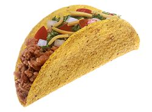

home/ gallery/ videos/ contact us/ booking

Mexico,[a][b] officially the United Mexican States,[c] is a country in the southern
portion of North America. It
is bordered to the north by the United States; to the south and west by the Pacific Ocean; to the southeast by
Guatemala, Belize, and the Caribbean Sea; and to the east by the Gulf of Mexico.[11] Mexico covers 1,972,550
square kilometers (761,610 sq mi),[12] making it the world's 13th-largest country by area; with approximately
126,014,024 inhabitants,[1] it is the 10th-most-populous country and has the most Spanish-speakers. Mexico is
organized as a federation comprising 31 states and Mexico City,[13] its capital and largest metropolis. Other
major urban areas include Guadalajara, Monterrey, Puebla, Toluca, Tijuana, Ciudad Juárez, and León.[14]
Pre-Columbian Mexico traces its origins to 8,000 BC and is identified as one of the six cradles of
civilization;[15] it was home to many advanced Mesoamerican civilizations, most notably the Maya and the Aztecs.
In 1521, the Spanish Empire conquered and colonized the region from its base in Mexico City, establishing the
colony of New Spain. The Catholic Church played an important role in spreading Christianity and the Spanish
language, while also preserving some indigenous elements.[16] Native populations were subjugated and heavily
exploited to mine rich deposits of precious metals, which contributed to Spain's status as a major world power
for the next three centuries,[17] and to a massive influx of wealth and a price revolution in Western
Europe.[18] Over time, a distinct Mexican identity formed, based on a fusion of European and indigenous customs;
this contributed to the successful Mexican War of Independence against Spain between 1810 and 1821.[19] Mexico's
early history as an independent nation state was marked by political and socioeconomic upheaval, with liberal
and conservative factions constantly changing the form of government. The country was invaded by two foreign
powers during the 19th century: first, after the Texas Revolution by American settlers, which led to the
Mexican–American War and huge territorial losses to the United States in 1848.[20] Liberal reforms were
enshrined in the Constitution of 1857, which sought to integrate indigenous communities and curtail the power of
the military and the church, granting religious freedom for the first time. This triggered an internal war of
Reform and intervention by France, during which conservatives installed Maximilian Habsburg as emperor against
the Republican resistance led by Benito Juárez. The last decades of the 19th century were marked by the
dictatorship of President Porfirio Díaz, who sought to modernize Mexico and restore order.[19] The Porfiriato
era ended in 1910 with the decade-long Mexican civil war (Mexican Revolution), which killed approximately 10% of
the population and after which the victorious Constitutionalist faction drafted an even more socially-oriented
1917 Constitution, which remains in effect to this day. The revolutionary generals ruled as a succession of
presidents until the assassination of Alvaro Obregón in 1928. This led to the formation of the Institutional
Revolutionary Party the following year, which pseudo-democratically governed Mexico until 2000; first under a
paternalistic center-left model of considerable economic success, which transitioned into a more US-aligned
neoliberal model since the 1980s.[21][22][23][24] Mexico is a developing country, ranking 74th on the Human
Development Index, but has the world's 15th-largest economy by nominal GDP and the 11th-largest by PPP, with the
United States being its largest economic partner.[25][26] Its large economy and population, global cultural
influence, and steady democratization make Mexico a regional and middle power;[27][28][29][30] it is often
identified as an emerging power but is considered a newly industrialized state by several
analysts.[31][32][33][34][35] However, the country continues to struggle with social inequality, poverty and
extensive crime. It ranks poorly on the Global Peace Index,[36] due in large part to ongoing conflict between
the government and drug trafficking syndicates, violently competing for the US market and trade routes. This
"drug war" has led to over 120,000 deaths since 2006.[37] Mexico ranks first in the Americas and seventh in the
world for the number of UNESCO World Heritage Sites.[38][39][40] It is also one of the world's 17 megadiverse
countries, ranking fifth in natural biodiversity.[41] Mexico's rich cultural and biological heritage, as well as
varied climate and geography, makes it a major tourist destination: as of 2018, it was the sixth most-visited
country in the world, with 39 million international arrivals.[42] Mexico is a member of United Nations, the G20,
the Organisation for Economic Co-operation and Development (OECD), the World Trade Organization (WTO), the
Asia-Pacific Economic Cooperation forum, the Organization of American States, Community of Latin American and
Caribbean States, and the Organization of Ibero-American States.
go to wikipedia
Tulum was the last great city constructed and inhabited by the Mayan people between the thirteenth and fifteenth centuries. It was a site of worship to the Great Descending God whose image adorns the temples within the site. Tulum was also of great importance for sea trade, most specifically for the trading of obsidian. Tribes from all over Mexico and other Central American countries would travel here for commerce. It’s said that the great wall around the city was erected to protect it from envious traders and pirates who wanted to steal the prime location for themselves.
The pull of ancient Mayan energies combined with the magic of the natural wonders and historic sites, have been bringing in spiritually centered tourism for decades now. Once a quiet, beach town with slowly wandering yogis and artists, Tulum has developed into a thriving tourism hot spot. Modern hotels and amenities are now available but don’t worry, there is still plenty of the Mayan spirit to discover. Below is our guide to making the best of your visit to Tulum. We hope you enjoy!

Playa del Carmen (Spanish pronunciation: ['plaʝa ðel 'kaɾmen]) is a city located along the Caribbean Sea in the municipality of Solidaridad, in the state of Quintana Roo, Mexico. It is a popular tourist area in eastern Mexico. Playa del Carmen features a wide array of tourist activities due to its geographical location in the Riviera Maya. It has also been the destination of PGA Tour golf tournaments and the set location for various television shows. The town has one of the fastest-growing populations in Mexico.
Originally a small fishing town, tourism to Playa del Carmen began with the passenger ferry service to Cozumel, an island across the Cozumel Channel and a world-famous scuba diving destination. Playa del Carmen has recently undergone extremely rapid development with new luxury residential condominium buildings, restaurants, boutiques, and entertainment venues. Tourist activity in Playa del Carmen centers on Quinta Avenida, or Fifth Avenue, which stretches from Calle 1 norte to Calle 40. A pedestrian walkway located just one or two blocks inland from the beach, Fifth Avenue is lined with hundreds of shops, bars, and restaurants. There are many small boutique hotels on and just off Fifth Avenue and on the beach. Playacar is a residential and tourist development in Playa del Carmen just south of the main urban area. Most of the all-inclusive hotels, the aviary, and the golf course are located in this development. There are two phases – phase 1 is mostly residential with a few hotels and some stores, while phase 2 contains the largest all-inclusive resorts as well as the golf course and a significant number of residential properties.
The city is home to Inter Playa del Carmen, an association football club founded in 1999, which competes in the south group of the Segunda División Profesional, the third tier of Mexican football league system. The World Wide Technology Championship at Mayakoba is a PGA Tour FedEx Cup golf tournament held at El Camaleón Golf Club since 2007. Since 2013, it has been a full-points tournament where the winner earns full rights for a PGA TOUR win.
.Cozumel (Spanish pronunciation: [kosuˈmel], Yucatec Maya: Kùutsmil) is an island and municipality in the Caribbean Sea off the eastern coast of Mexico's Yucatán Peninsula, opposite Playa del Carmen. It is separated from the mainland by Cozumel Channel and is close to the Yucatán Channel. The municipality is part of the state of Quintana Roo, Mexico. The economy of Cozumel is based on tourism, with visitors able to benefit from the island's balnearios, scuba diving, and snorkeling. The main town on the island is San Miguel de Cozumel.
A taco (US: /ˈtɑːkoʊ/, UK: /ˈtækoʊ/, Spanish: [ˈtako]) is a traditional Mexican dish consisting of a small hand-sized corn or wheat tortilla topped with a filling. The tortilla is then folded around the filling and eaten by hand. A taco can be made with a variety of fillings, including beef, pork, chicken, seafood, beans, vegetables, and cheese, allowing for great versatility and variety. They are often garnished with various condiments, such as salsa, guacamole, or sour cream, and vegetables, such as lettuce, onion, tomatoes, and chiles. Tacos are a common form of antojitos, or Mexican street food, which have spread around the world. Tacos can be contrasted with similar foods such as burritos, which are often much larger and rolled rather than folded; taquitos, which are rolled and fried; or chalupas/tostadas, in which the tortilla is fried before filling.
go to wikipedia 